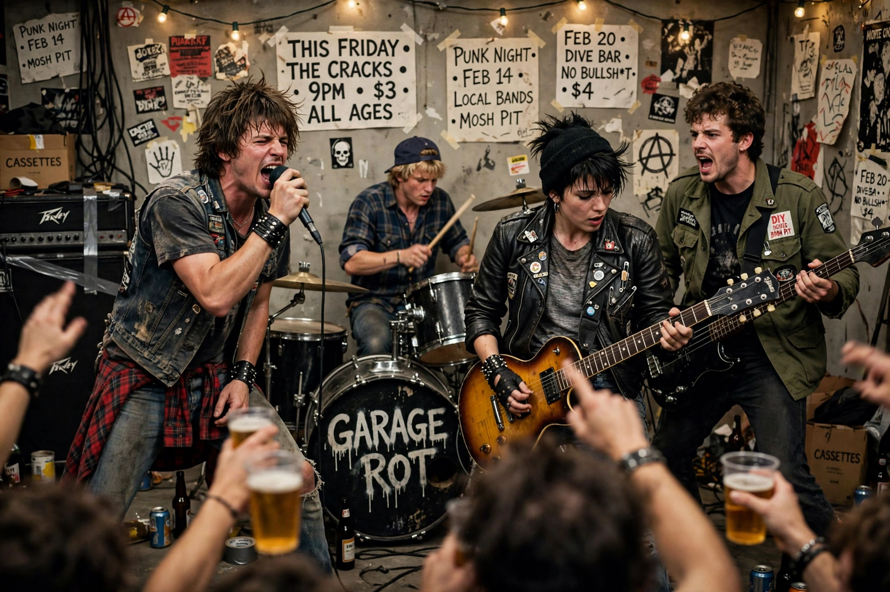

| Mudhoney | |
|---|---|
 | |
| Origin | Seattle, Washington, U.S. |
| Years active | 1988–present |
| Genres | Grunge, garage punk, punk rock, alternative rock |
| Labels | Sub Pop, Reprise |
| Members | Mark Arm, Steve Turner, Dan Peters, Guy Maddison, Matt Lukin |
Mudhoney is an American rock band formed in Seattle, Washington, in 1988, following the demise of Green River. The band — singer/rhythm guitarist Mark Arm, lead guitarist Steve Turner, drummer Dan Peters and bassist Matt Lukin (formerly of the Melvins) — took its name from the 1965 Russ Meyer film Mudhoney.
Mudhoney's first release, the "Touch Me I'm Sick" single (1988) on Sub Pop, became the label's breakthrough record and a defining grunge anthem; the Superfuzz Bigmuff EP that followed is considered a classic of the genre. Their fuzz-drenched sound drew on the Stooges, garage rock and hardcore punk.
The band released its self-titled debut album in 1989 and Every Good Boy Deserves Fudge in 1991. Signing to Reprise, they issued Piece of Cake (1992) and toured with Nirvana, but never matched their peers' commercial success. Lukin left in 1999 and was replaced by Guy Maddison. Mudhoney returned to Sub Pop in the 2000s and has continued recording and touring, including Digital Garbage (2018) and Plastic Eternity (2023).
Though less famous than Pearl Jam or Soundgarden, Mudhoney is regarded as the quintessential grunge band, and "Touch Me I'm Sick" helped launch Sub Pop and the Seattle sound.
Green River · Melvins · Alternative rock · Pacific Northwest
From Wikipedia, the free encyclopedia (recreated from memory).